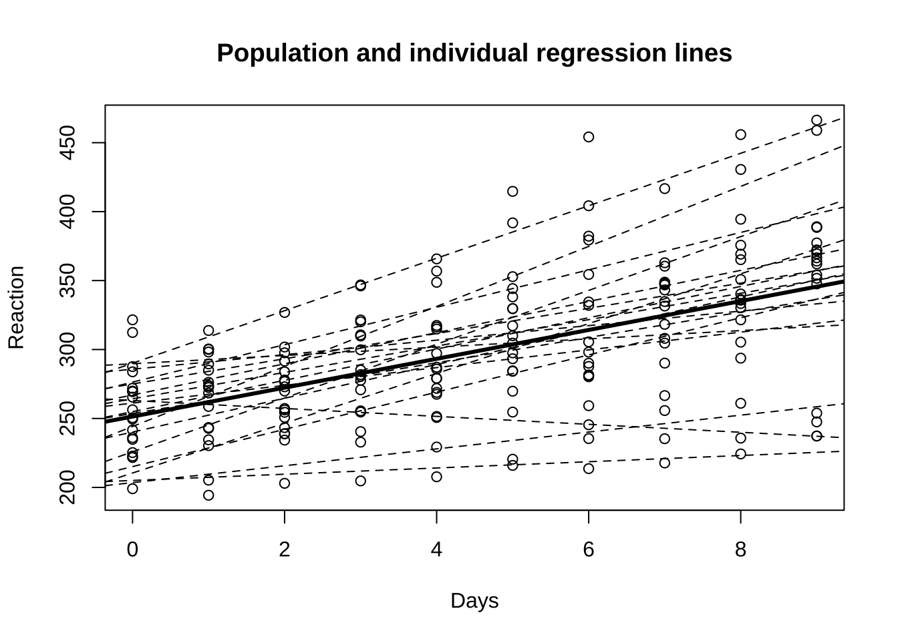

제 1 장 반복측정자료
1.1 개요
반복측정자료(longitudinal data, repeated measurements)는 관측단위안에서 여러 개의 관측값을 측정한 자료의 형식을 말한다.
예를 들어 환자가 병원을 여러 번 방문할 때마다 혈압을 측정하였다면 한 명의 환자에서 반복 측정한 자료는 서로 독립이 아니다. 또한 가구조사(household survey)에서 가구원의 경제덕 상태, 건겅 상태 등을 여러 해동안 매년 측정하는 경우가 있는데 이러한 자료를 패널자료(panel data) 또는 longitudinal 자료라고 한다. 이렇게 하나의 관측단위 안에서 반복 측정한 자료들은 서로 독립이 아닌 특징이 있고 자료를 분석하는 경우 이러한 자료들의 종속구조를 고려하는 모형을 사용하는 것이 적절하다.
이렇게 반복측정자료에서 반복자료들의 공분산구조를 설정하는 통계적 방법들은 다양하지만 대표적으로 쉽게 사용할 수 있는 방법이 임의효과를 포함한 혼합모형을 사용하는 방법이다.
1.2 sleepstudy 자료
lme4 패키지에 자료인 spleepstudy는 화물트럭 운전사들에 대한 수면부족 현상에 대하여 연구한 자료이다. 18명의 운전자들이 매일 3시간의 수면(부족한 수면)을 하면서
매일 일정한 동작에 대한 반응시간을 10일 동안 반복적으로 측정한 자료이다.
한명의 운전사에게 10일 동안의 반응에 대한 측정자료 10개가 존재하므로 이는 반복측정 자료이며 이러한 10개의 자료는 독립이 아니다.
혼합모형을 적합할 수 있는 R 패키지는 여러 가지 다양한 패키지가 있지만 최대가능도 추정법에 기반한
lme4 패키지를 먼저 이용할 것이다.
일단 자료의 구조를 살펴보자. 반응변수 Reaction 은 반응시간(ms)를 나타내며 설명변수로서 Days 는 날짜(\(t=0,1,2,\dots,9\)), Subject 는 운전자의 고유번호를 나타낸다.
str(sleepstudy)## 'data.frame': 180 obs. of 3 variables:
## $ Reaction: num 250 259 251 321 357 ...
## $ Days : num 0 1 2 3 4 5 6 7 8 9 ...
## $ Subject : Factor w/ 18 levels "308","309","310",..: 1 1 1 1 1 1 1 1 1 1 ...head(sleepstudy,n=20)## Reaction Days Subject
## 1 249.5600 0 308
## 2 258.7047 1 308
## 3 250.8006 2 308
## 4 321.4398 3 308
## 5 356.8519 4 308
## 6 414.6901 5 308
## 7 382.2038 6 308
## 8 290.1486 7 308
## 9 430.5853 8 308
## 10 466.3535 9 308
## 11 222.7339 0 309
## 12 205.2658 1 309
## 13 202.9778 2 309
## 14 204.7070 3 309
## 15 207.7161 4 309
## 16 215.9618 5 309
## 17 213.6303 6 309
## 18 217.7272 7 309
## 19 224.2957 8 309
## 20 237.3142 9 3091.3 개별단위 분석(no pooling)
각 운전자에 대한 10일 간의 반응속도가 시간에 따라 어떻게 변하는 가를 알아보자. 다음은 10명의 운잔사에 대하여 시간과 반응시간에 대한 산포도를 그리고 각 운전사에 대하여 단순회귀직선을 적합하여 그 결과를 추가한 그림이다.
전반적으로 시간이 지나면서 운전자들의 반응시간이 증가하고 있음을 알 수 있다. 또한 개인 별로 반응 시간의 변화와 패턴이 매우 다르다는 것을 알 수 있다.
ggplot(sleepstudy, aes(x=Days, y=Reaction)) +
geom_point(size=0.5) +
stat_smooth(method = "lm",se=F,size=0.5)+
facet_wrap("Subject", labeller = label_both)+
theme_bw()## `geom_smooth()` using formula 'y ~ x'
각 \(i\)번째 운전자에 대하여 10일간 측정한 반응속도 \(y_{ij}\)를 시간을 설명변수로 하는 단순 회귀모형을 적합하면 개인별 회귀직선을 다음과 같이 표시할 수 있다.
\[\begin{equation} y_{ij} = \beta_{0i} + \beta_{1i} t_j + e_{ij},\quad i=1,2,\dots,18,\quad j=1,2,\dots,10 \tag{1.1} \end{equation}\]
여기서 오차항 \(e_{ij}\)은 서로 독립이며 \(N(0, \sigma^2_e)\)를 따른다고 가정한다.
행렬식으로는 다음과 같이 나타낼 수 있다.
\[ \bm y_i =\bm X_i \bm \beta_{i} +\bm e_i \]
여기서 \[ \bm y_i=\begin{bmatrix} y_{i1} \\ y_{i2} \\ \vdots \\ y_{i,10} \end{bmatrix},~ \bm X_i = \begin{bmatrix} 1 & 0 \\ 1 & 1 \\ \vdots & \vdots \\ 1 & 9 \end{bmatrix}, \bm \beta_i= \begin{bmatrix} \beta_{0i} \\ \beta_{1i} \\ \end{bmatrix}, \bm e_i= \begin{bmatrix} e_{i1} \\ e_{i2} \\ \vdots \\ e_{i,10} \end{bmatrix} \]
위의 식에서 \(\beta_{0i}\)와 \(\beta_{1i}\)는 \(i\)번째 운전사의 반응속도를 설명내는 회귀직선의 절편과 기울기이다. 절편 \(\beta_{0i}\)는 실험 시작때 반응속도를 의미하고 기울기 \(\beta_{1i}\)는 실험이 진행되는 동안 반응속도가 어떻게 변하는 지 변화의 방향과 크기를 보여준다.
함수 lmList를 아래와 같이 이용하면 식 (1.1) 을 각 운전사마다 적합시켜 각각의 절편과 기울기를 구할 수 있다.
함수 lmList에서 모형식 Reaction ~ Days | Subject은 각 Subject 별로 반응변수를 Reaction으로 하고 설명변수를 Days로 하는 단순회귀모형을 적합하라는 의미이다.
lmf1 <- lmList(Reaction ~ Days | Subject, sleepstudy)
lmf1## Call: lmList(formula = Reaction ~ Days | Subject, data = sleepstudy)
## Coefficients:
## (Intercept) Days
## 308 244.1927 21.764702
## 309 205.0549 2.261785
## 310 203.4842 6.114899
## 330 289.6851 3.008073
## 331 285.7390 5.266019
## 332 264.2516 9.566768
## 333 275.0191 9.142045
## 334 240.1629 12.253141
## 335 263.0347 -2.881034
## 337 290.1041 19.025974
## 349 215.1118 13.493933
## 350 225.8346 19.504017
## 351 261.1470 6.433498
## 352 276.3721 13.566549
## 369 254.9681 11.348109
## 370 210.4491 18.056151
## 371 253.6360 9.188445
## 372 267.0448 11.298073
##
## Degrees of freedom: 180 total; 144 residual
## Residual standard error: 25.59182cor(coef(lmf1))## (Intercept) Days
## (Intercept) 1.0000000 -0.1375534
## Days -0.1375534 1.0000000plot(coef(lmf1),main="intercepts and slopes on drivers: sleep study ")
18개의 절편과 기울기는 큰 상관관계는 없는것으로 보이지만 약한 음의 상관계수가 나타났다.
절편과 기울기에 대한 분포를 보기 위하여 상자그림을 그려보면 평균을 중심으로 대칭인 분포를 보이고 있다.
boxplot(coef(lmf1)[1])
title('boxplot for intercepts')boxplot(coef(lmf1)[2])
title('boxplot for slopes')1.4 통합 분석 (complete pooling)
이제 각 운전사에 대하여 회귀식을 따로 적합하지 않고 전체 운전사들의 자료를 모두 합쳐서 하나의 회귀식을 고려할 수 있다. 개체의 특성을 반영하는 모형이 아닌 전체 집단에 대한 평균적인 모형(population model)을 고려하는 것이다.
\[\begin{equation} y_{ij} = \beta_0 + \beta_1 t_j + e_{ij} ,\quad i=1,2\dots,18, j=1,2, \dots, 10 \tag{1.2} \end{equation}\]
여기서 오차항은 서로 독립이며 \(N(0, \sigma^2_e)\)를 따른다고 가정한다.
모형 (1.2)은 운전자의 특성을 고려하지 않고 전체 운전사 집단의 관측값에 기반한 모형으로서 시간에 따른 반응시간에 대한 관계를 모집단의 평균적 함수 관계를 파악하는 모형이라고 할 수 있다.
lmpop <- lm(Reaction ~ Days, sleepstudy)
summary(lmpop)##
## Call:
## lm(formula = Reaction ~ Days, data = sleepstudy)
##
## Residuals:
## Min 1Q Median 3Q Max
## -110.848 -27.483 1.546 26.142 139.953
##
## Coefficients:
## Estimate Std. Error t value Pr(>|t|)
## (Intercept) 251.405 6.610 38.033 < 2e-16 ***
## Days 10.467 1.238 8.454 9.89e-15 ***
## ---
## Signif. codes: 0 '***' 0.001 '**' 0.01 '*' 0.05 '.' 0.1 ' ' 1
##
## Residual standard error: 47.71 on 178 degrees of freedom
## Multiple R-squared: 0.2865, Adjusted R-squared: 0.2825
## F-statistic: 71.46 on 1 and 178 DF, p-value: 9.894e-15아래 그림에서 굵은 선은 모집단의 평균적 함수 관계를 나타나는 모형 (1.2)을 적합한 결과이며 점선은 개별 운전사의 자료를 적합한 모형 (1.1) 을 나타낸 그림이다.
with(sleepstudy, plot(Days, Reaction,main="Population and individual regression lines"))
abline(a=coef(lmpop)[1], b=coef(lmpop)[2],lwd=3)
for ( i in 1:18 ) {
xx <- as.numeric(coef(lmf1)[i,])
abline(a=xx[1],b=xx[2], lty=2)
}
이제 각 운전사에 대하여 개체별로 적합한 회귀식의 계수들\((\hat \beta_{0i}, \hat \beta_{1i})\) 와 전체집단에 적한한 회귀식의 계수 \((\hat \beta_{0}, \hat \beta_{1})\)의 관계를 보면 개체별로 회귀 계수들의 평균이 전체에 적용한 모형의 계수와 매우 가까운 사실을 알 수 있다.
\[ \frac{\sum_{i=1}^n \hat \beta_{0i}}{n} \approx \hat \beta_{0}, \quad \frac{\sum_{i=1}^n \hat \beta_{1i}}{n} \approx \hat \beta_{1} \]
apply(coef(lmf1),2,mean)## (Intercept) Days
## 251.40510 10.46729coef(lmpop)## (Intercept) Days
## 251.40510 10.467291.5 선형 혼합모형(partial pooling)
1.5.1 임의계수모형
앞 절의 모형과 분석에서 알 수 있듯이 한 개체에 대하여 여러 개의 관측값을 측정한 자료에 회귀방정식을 각각 적합시켜보고 또한 개체의 특성을 고려하지않은 전체 모형을 적합해보면 다음과 같은 두 가지 결과를 볼 수 있다.
- 각 개체별 회귀식은 개인의 특성을 반영한다. 즉, 개체에 따라 시간에 따른 반응시간의 변화가 다르게 나타난다.
- 하지만 개인별로 볼 때도 전체적으로는 시간에 따라서 반응시간이 증가하는 경향이 있음을 알 수 있다.
- 전체 자료에 적합한 모형을 보면 개인별로 적합한 모형의 공통적인 성격, 즉 시간에 따른 반응시간의 증가를 알 수 있다.
- 이러한 결과를 보고 각 개인의 변화는 전체적인 변화를 따르면서 각 개인의 특성이 반영되었다고 가정할 수 있다.
위에서 논의하였듯이 전체적인 경향과 게인의 특성을 동시에 고려할 수 있는 모형이 생각할 수 있고 이러한 모형이 다음과 같은 모형이다.
\[\begin{equation} y_{ij} = (\beta_0 + b_{0i}) + (\beta_1 + b_{1i}) t_j + e_{ij} \tag{1.3} \end{equation}\]
모형 (1.3) 는 절편과 기울기가 두 개의 구성 요소로 더해져서 표현된다.
기울기는 \(\beta_1+b_{1i}\)로서 나타내어지며 \(\beta_1\)은 모집단이 가지는 공통적인 경향을 반영하는 모수이고 \(b_{1i}\)는 \(i\) 번째 개체의 특성을 반영한 확률변수이다.
절편도 유사한 형식으로 구성된다. 각 개인에 대한 특성을 나타내는 변수 \((b_{0i}, b_{1i})\) 을 확률변수로 설정하고 이를 모수(\(\beta_0, \beta_1)\) (parameter or fixed effect)와 구별하여 임의효과(random effect)라고 한다.
식 (1.3)에서 제시된 모형은 임의계수모형(random coefficient model)이라고 부른다.
18명에 대한 회귀직선의 절편과 기울기를 보면 개인의 차이에 따른 변동을 볼 수 있으며 이러한 각 개인간의 변동을 임의효과 를 이용하여 다음과 같은 모형을 생각해보자.
\[ \bm \beta_i= \begin{bmatrix} \beta_{0} \\ \beta_{1} \\ \end{bmatrix} +\begin{bmatrix} b_{0i} \\ b_{1i} \\ \end{bmatrix} , \quad \begin{bmatrix} b_{0i} \\ b_{1i} \\ \end{bmatrix} \sim N \left ( \begin{bmatrix} 0 \\ 0 \\ \end{bmatrix} , \begin{bmatrix} \sigma^2_{b1} & \rho \sigma_{b1} \sigma_{b2}\\ \rho \sigma_{b1} \sigma_{b2} & \sigma^2_{b2} \\ \end{bmatrix} \right ) \]
위의 모형은 각 개인의 회귀직선에서 각 절편과 기울기가 전체평균 \(\beta_0\)와 \(\beta_1\)를 따르며 각 개인의 차이는 전체평균에 임의효과인 \(b_{0i}\)와 \(b_{1i}\)가 더해져서 나타난다는 것을 의미한다. 이변량 임의효과 \(b_{0i}\)와 \(b_{1i}\)는 이변량 정규분포를 따르며 각각의 분산과 상관계수가 \(\sigma^2_{b1}\), \(\sigma^2_{b2}\), \(\rho\)이다.
다른 개체에 대한 임의효과는 서로 독립이며 임의 효과와 오차항은 독립이다. 여기서 오차항은 서로 독립이며 \(N(0, \sigma^2_e)\)를 따른다고 가정한다.
\[ Cov(\bm b_{i}, \bm b_{j}) =\bm 0 \text{ when } i \ne j,\quad Cov(\bm b_{i}, e_{jk}) =\bm 0 \text{ for all } i,j,k \]
1.5.2 혼합효과 모형
임의계수모형을 각 개인 \(i\)에 대하여 행렬식으로 표시하면 다음과 같은 혼합효과모형(mixed effects model)으로 나타낼 수 있다. 혼합효과모형은 반응변수에 영향을 미치는 효과를 고정효과와 임의효과로 나누어 설명하는 모형이다.
\[ \bm y_i = \bm X_i \bm \beta + \bm Z_i \bm b_i + \bm e_i \]
여기서
\[ \bm y_i=\begin{bmatrix} y_{i1} \\ y_{i2} \\ \vdots \\ y_{i,10} \end{bmatrix},~\bm X_i = \begin{bmatrix} 1 & 0 \\ 1 & 1 \\ \vdots & \vdots \\ 1 & 9 \end{bmatrix}, \bm \beta= \begin{bmatrix} \beta_{0} \\ \beta_{1} \\ \end{bmatrix}, ~\bm Z_i = \begin{bmatrix} 1 & 0 \\ 1 & 1 \\ \vdots & \vdots \\ 1 & 9 \end{bmatrix},~ \bm b_i = \begin{bmatrix} b_{0i} \\ b_{1i} \\ \end{bmatrix},~ \bm e_i= \begin{bmatrix} e_{i1} \\ e_{i2} \\ \vdots \\ e_{i,10} \end{bmatrix} \]
위의 각 개인에 대한 모형을 모두 합쳐서 하나의 혼합효과모형으로 나타내면 다음과 같이 표현할 수 있다.
\[\begin{equation} \bm y = \bm X \bm \beta + \bm Z \bm b + \bm e \tag{1.4} \end{equation}\]
여기서 반응변수벡터 \(\bm y\)와 고정효과 \(\bm \beta\)에 대한 계획행렬 \(X\)는 각 개인의 반응변수벡터 \(\bm y_i\)와 \(\bm X_i\)를 행으로 쌓아놓은 것으로 표현된다. 오차항에 대한 벡터 \(\bm e\)도 동일한 형식의 벡터이다.
\[ \bm y_i=\begin{bmatrix} \bm y_{1} \\ \bm y_{2} \\ \vdots \\ \bm y_{18} \end{bmatrix},~\bm X = \begin{bmatrix} \bm X_1 \\ \bm X_2 \\ \vdots \\ \bm X_{18} \end{bmatrix} ~ \bm e = \begin{bmatrix} \bm e_1 \\ \bm e_2 \\ \vdots \\ \bm e_{18} \end{bmatrix} \]
임의효과 벡터 \({\bm b}\) 는 각 개인에 대한 임의효과벡터 \(\bm b_i\)를 행으로 쌓아놓은것과 같고 임의효과에 대한 계획행렬 \(\bm Z\)는 각 개인의 계획행렬 \(\bm Z_i\)를 대각원소로 같은 행렬이다.
\[ \bm b=\begin{bmatrix} \bm b_{1} \\ \bm b_{2} \\ \vdots \\ \bm b_{18} \end{bmatrix},~\bm Z = \begin{bmatrix} \bm Z_1 & 0 & \dots & 0 \\ 0 & \bm Z_2 & \dots & 0 \\ \vdots & \vdots & \vdots & \vdots \\ 0 & 0 & \dots & \bm Z_{18} \end{bmatrix} \]
임의효과는 개인의 특성을 설명하는 효과로서 모집단을 구성하는 개인이 표본에 추출되었다고 생각하며 확률분포를 따른다고 가정한다. 반복측정자료에서 임의효과를 공통으로 가지고 있는 관측치는 독립이 아니게 돼며 따라서 같은 개체에서 나온 관측값은 독립이 아니다.
1.5.3 선형혼합모형의 적합
혼합모형 @ref{eq:lme1)은 lmer() 함수를 이용하여 적합시켜보자. 모형식에서 (1 + Days|Subject)
는 각 개체 Subject 에 대하여 절편 1 과 기울기 Days에 임의효과를 포함한다고 지정한다.
fm1 <- lmer(Reaction ~ 1 + Days + (1 + Days|Subject), sleepstudy)
summary(fm1)## Linear mixed model fit by REML. t-tests use Satterthwaite's method [
## lmerModLmerTest]
## Formula: Reaction ~ 1 + Days + (1 + Days | Subject)
## Data: sleepstudy
##
## REML criterion at convergence: 1743.6
##
## Scaled residuals:
## Min 1Q Median 3Q Max
## -3.9536 -0.4634 0.0231 0.4634 5.1793
##
## Random effects:
## Groups Name Variance Std.Dev. Corr
## Subject (Intercept) 612.10 24.741
## Days 35.07 5.922 0.07
## Residual 654.94 25.592
## Number of obs: 180, groups: Subject, 18
##
## Fixed effects:
## Estimate Std. Error df t value Pr(>|t|)
## (Intercept) 251.405 6.825 17.000 36.838 < 2e-16 ***
## Days 10.467 1.546 17.000 6.771 3.26e-06 ***
## ---
## Signif. codes: 0 '***' 0.001 '**' 0.01 '*' 0.05 '.' 0.1 ' ' 1
##
## Correlation of Fixed Effects:
## (Intr)
## Days -0.138위의 혼합모형 적합결과를 살펴보자. 첫째로 고정효과에 대한 추정식은 다음과 같다
fixef(fm1)## (Intercept) Days
## 251.40510 10.46729\[ \begin{bmatrix} \hat {\beta}_{0} \\ \hat {\beta}_{1} \\ \end{bmatrix} = \begin{bmatrix} 251.40510 \\ 10.46729 \end{bmatrix} \]
또한 오차항에 대한 분산 및 임의효과의 분산성분과 상관계수는 다음과 같이 나타난다.
VarCorr(fm1)## Groups Name Std.Dev. Corr
## Subject (Intercept) 24.7407
## Days 5.9221 0.066
## Residual 25.59181.5.4 임의효과에 대한 예측
이제 임의효과 \(\bm b_i =(b_{0i}, b_{1i})^t\)에 대한 예측(prediction)을 생각해보자. 우리는 오직 관측벡터 \(\bm y_i\)만을 관측하고 임의효과 \(\bm b_i\)는 관측을 할 수 없는 확률변수이다. 하지만 주어진 관측벡터와 추정된 분산으로 임의효과의 값을 예측할 수있으며 그 결과는 다음과 같다.
re <- ranef(fm1)$Subject
re## (Intercept) Days
## 308 2.2585509 9.1989758
## 309 -40.3987381 -8.6196806
## 310 -38.9604090 -5.4488565
## 330 23.6906196 -4.8143503
## 331 22.2603126 -3.0699116
## 332 9.0395679 -0.2721770
## 333 16.8405086 -0.2236361
## 334 -7.2326151 1.0745816
## 335 -0.3336684 -10.7521652
## 337 34.8904868 8.6282652
## 349 -25.2102286 1.1734322
## 350 -13.0700342 6.6142178
## 351 4.5778642 -3.0152621
## 352 20.8636782 3.5360011
## 369 3.2754656 0.8722149
## 370 -25.6129993 4.8224850
## 371 0.8070461 -0.9881562
## 372 12.3145921 1.2840221예를 들어 첫 번쨰 운전자에 대한 절편과 기울기의 임의효과에 대한 예측값은 다음과 같다.
\[ {\hat b}_{0i} = 2.2585509, \quad {\hat b}_{1i} = 9.1989758 \] 위에서 구한 절편과 기울기에 대한 임의효과들의 산포도를 보면 다음과 같다.
plot(re, main ="prediction of random effects ")예측된 각 개인의 절편과 기울기에 대한 임의효과의 예측값 \({\hat b}_{0i}\)과 \({\hat b}_{1i}\)에 고정효과의 추정량 \(\hat \beta_0\)와 \(\hat \beta_1\)에 각각 더해주면 각 개인의 절편과 기울기에 대한 예측값을 구할 수 있다.
\[ {\hat \beta}_{0i} = \hat \beta_0 + {\hat b}_{0i} , \quad {\hat \beta}_{1i} = \hat \beta_1 + {\hat b}_{1i} \]
beta <- matrix(as.numeric(fixef(fm1)),18,2,byrow=T)
beta + re ## (Intercept) Days
## 308 253.6637 19.6662617
## 309 211.0064 1.8476053
## 310 212.4447 5.0184295
## 330 275.0957 5.6529356
## 331 273.6654 7.3973743
## 332 260.4447 10.1951090
## 333 268.2456 10.2436499
## 334 244.1725 11.5418676
## 335 251.0714 -0.2848792
## 337 286.2956 19.0955511
## 349 226.1949 11.6407181
## 350 238.3351 17.0815038
## 351 255.9830 7.4520239
## 352 272.2688 14.0032871
## 369 254.6806 11.3395008
## 370 225.7921 15.2897709
## 371 252.2122 9.4791297
## 372 263.7197 11.7513080예를 들어 선형혼합모형에서 첫 번쨰 운전자에 대한 절편과 기울기에 대한 추정값은 다음과 같다.
\[ {\hat \beta}_{0i} = 253.6637, \quad {\hat \beta}_{1i} = 19.6662617 \]
위의 결과를 각 운전자에 대해 개별 회귀직선 (1.1)을 적합시켜서 얻은 18개의 절편과 기울기와 비교해보자.
coef(lmf1)## (Intercept) Days
## 308 244.1927 21.764702
## 309 205.0549 2.261785
## 310 203.4842 6.114899
## 330 289.6851 3.008073
## 331 285.7390 5.266019
## 332 264.2516 9.566768
## 333 275.0191 9.142045
## 334 240.1629 12.253141
## 335 263.0347 -2.881034
## 337 290.1041 19.025974
## 349 215.1118 13.493933
## 350 225.8346 19.504017
## 351 261.1470 6.433498
## 352 276.3721 13.566549
## 369 254.9681 11.348109
## 370 210.4491 18.056151
## 371 253.6360 9.188445
## 372 267.0448 11.298073이렇게 혼합모형을 통해서 얻은 각 개인의 절편과 기울기에 대한 예측값과 각각의 개인에 대해서 회귀직선을 따로 적합하여 얻은 절편과 기울기의 관계를 그림으로 그려보면 다음과 같다. 혼합모형을 통해서 얻은 각 개인의 절편과 기울기는 절편과 기울기의 전체평균값 방향으로 축소되는 경향(shrinkage)을 볼수있다.
df <- coef(lmf1)
fclow <- subset(df, `(Intercept)` < 251)
fchigh <- subset(df, `(Intercept)` > 251)
cc1 <- as.data.frame(coef(fm1)$Subject)
names(cc1) <- c("A", "B")
df <- cbind(df, cc1)
ff <- fixef(fm1)
with(df,
print(xyplot(`(Intercept)` ~ Days, aspect = 1,
x1 = B, y1 = A,
panel = function(x, y, x1, y1, subscripts, ...) {
panel.grid(h = -1, v = -1)
x1 <- x1[subscripts]
y1 <- y1[subscripts]
larrows(x, y, x1, y1, type = "closed", length = 0.1,
angle = 15, ...)
lpoints(x, y,
pch = trellis.par.get("superpose.symbol")$pch[2],
col = trellis.par.get("superpose.symbol")$col[2])
lpoints(x1, y1,
pch = trellis.par.get("superpose.symbol")$pch[1],
col = trellis.par.get("superpose.symbol")$col[1])
lpoints(ff[2], ff[1],
pch = trellis.par.get("superpose.symbol")$pch[3],
col = trellis.par.get("superpose.symbol")$col[3])
ltext(fclow[,2], fclow[,1], row.names(fclow),
adj = c(0.5, 1.7))
ltext(fchigh[,2], fchigh[,1], row.names(fchigh),
adj = c(0.5, -0.6))
},
key = list(space = "top", columns = 3,
text = list(c("Mixed model", "Individual", "Population")),
points = list(col = trellis.par.get("superpose.symbol")$col[1:3],
pch = trellis.par.get("superpose.symbol")$pch[1:3]))
)))
1.5.5 모형의 축소
위에서 고려한 임의계수모형 (1.3)에서는 절편과 기울기에 대한 2개의 임의효과 \(b_{0i}\) 와 \(b_{1i}\) 를 고려하고 더 나아가 두 개의 임의효과가 독립이 아니며 상관계수가 \(\rho\)라고 가정하였다.
앞에서 추정결과에 의하면 두 개의 임의효과의 상관계수의 추정값은 \(\hat \rho = 0.066\) 으로 거의 0에 가깝다. 이러한 결과에 근거하여 두 임의효과가 독립인 축소모형을 고려해 보자. 즉 임의계수모형 (1.3)에서 임의효과의 상관계수가 \(\rho=0\)인 임의효과의 분포를 다음과 같이 가정한다.
\[ \begin{bmatrix} b_{0i} \\ b_{1i} \\ \end{bmatrix} \sim N \left ( \begin{bmatrix} 0 \\ 0 \\ \end{bmatrix} , \begin{bmatrix} \sigma^2_{b1} & 0\\ 0 & \sigma^2_{b2} \\ \end{bmatrix} \right ) \]
이러한 모형을 아래와 같이 적합시키면 추정결과는 다음과 같다. 아래 모형식에서 (1 + Days||Subject)
는 각 개체 Subject 에 대하여 절편 1 과 기울기 Days에 임의효과를 포함한다고 지정하며 한개의 바 | 대신 두 개의 바 || 를 사용하면 임의효과가 독립이라는 것을 지정한다.
fm2 <- lmer(Reaction ~ 1 + Days + (1+Days || Subject) , sleepstudy)
summary(fm2)## Linear mixed model fit by REML. t-tests use Satterthwaite's method [
## lmerModLmerTest]
## Formula: Reaction ~ 1 + Days + (1 + Days || Subject)
## Data: sleepstudy
##
## REML criterion at convergence: 1743.7
##
## Scaled residuals:
## Min 1Q Median 3Q Max
## -3.9626 -0.4625 0.0204 0.4653 5.1860
##
## Random effects:
## Groups Name Variance Std.Dev.
## Subject (Intercept) 627.57 25.051
## Subject.1 Days 35.86 5.988
## Residual 653.58 25.565
## Number of obs: 180, groups: Subject, 18
##
## Fixed effects:
## Estimate Std. Error df t value Pr(>|t|)
## (Intercept) 251.405 6.885 18.156 36.513 < 2e-16 ***
## Days 10.467 1.560 18.156 6.712 2.59e-06 ***
## ---
## Signif. codes: 0 '***' 0.001 '**' 0.01 '*' 0.05 '.' 0.1 ' ' 1
##
## Correlation of Fixed Effects:
## (Intr)
## Days -0.184상관계수가 0인 모형에 대한 추정 결과는 상관계수가 있는 모형과 크게 다르지 않다.
두 모형, 즉 절편과 기울기에 대한 두 임의효과가 종속인지 또는 독립인지에 대한 두 모형을 AIC(Akaike Information Criteris)와 BIC(Bayesian Information Criteria)로 비교한 결과이다. 두 모형 간의 차이는 거의 없는 것으로 판단된다.
c(AIC(fm1) , BIC(fm1))## [1] 1755.628 1774.786c(AIC(fm2), BIC(fm2))## [1] 1753.669 1769.634더나아가 anova 함수를 이용하여 두 모형의 차이를 검정한 결과는 두 모형 간의 차이가 없다는 것이다. 참고할 점은 혼합모형에서의 모형을 비교하는 분산분석에 의한 검정은 효율이 떨어질 수 있기 때문에 주의해야 한다.
anova(fm1,fm2)## refitting model(s) with ML (instead of REML)## Data: sleepstudy
## Models:
## fm2: Reaction ~ 1 + Days + (1 + Days || Subject)
## fm1: Reaction ~ 1 + Days + (1 + Days | Subject)
## npar AIC BIC logLik deviance Chisq Df Pr(>Chisq)
## fm2 5 1762.0 1778.0 -876.00 1752.0
## fm1 6 1763.9 1783.1 -875.97 1751.9 0.0639 1 0.80041.6 베이지안 추정
임의효과를 이용하는 선형혼합 모형은 모형의 구조상 베이지안 모형과 매우 유사하다. 베이지안 모형에서는 회귀계수와 분산 성분에 대한 사전분포(prior distribution)을 설정하고 모수들의 사후분포(posterior distribution)을 추정한다.
베이지안 모형의 적합은 매우 다양한 패키지나 프로그램을 사용할 수 있다(BUGS,STAN, MCMCglmm, brms). 본 강의에서는 brms 패키지의 brm 함수를 사용하여 베이지안 방법으로 임의계수 모형을 적합하는 예를 보여주고자 한다. brms 패키지는 lme4 패키지의 모형식을 그대로 사용할 수 있다. 참고로 다른 패키지는 lme4 패키지의 모형식보다 더욱 복잡한 식을 사용해야 한다.
sleepstudy 자료에 대하여 brms 패키지의 brm 함수를 이용하여 베이지안 방법으로 임의계수 모형을 추정하는 프로그램은 아래와 같다.
fm3 <- brm(Reaction ~ 1 + Days + (1 + Days|Subject), data = sleepstudy)## Compiling Stan program...## Start sampling##
## SAMPLING FOR MODEL '9911b459d8c4b04b2868a198ead77672' NOW (CHAIN 1).
## Chain 1:
## Chain 1: Gradient evaluation took 7.6e-05 seconds
## Chain 1: 1000 transitions using 10 leapfrog steps per transition would take 0.76 seconds.
## Chain 1: Adjust your expectations accordingly!
## Chain 1:
## Chain 1:
## Chain 1: Iteration: 1 / 2000 [ 0%] (Warmup)
## Chain 1: Iteration: 200 / 2000 [ 10%] (Warmup)
## Chain 1: Iteration: 400 / 2000 [ 20%] (Warmup)
## Chain 1: Iteration: 600 / 2000 [ 30%] (Warmup)
## Chain 1: Iteration: 800 / 2000 [ 40%] (Warmup)
## Chain 1: Iteration: 1000 / 2000 [ 50%] (Warmup)
## Chain 1: Iteration: 1001 / 2000 [ 50%] (Sampling)
## Chain 1: Iteration: 1200 / 2000 [ 60%] (Sampling)
## Chain 1: Iteration: 1400 / 2000 [ 70%] (Sampling)
## Chain 1: Iteration: 1600 / 2000 [ 80%] (Sampling)
## Chain 1: Iteration: 1800 / 2000 [ 90%] (Sampling)
## Chain 1: Iteration: 2000 / 2000 [100%] (Sampling)
## Chain 1:
## Chain 1: Elapsed Time: 1.17697 seconds (Warm-up)
## Chain 1: 0.601318 seconds (Sampling)
## Chain 1: 1.77829 seconds (Total)
## Chain 1:
##
## SAMPLING FOR MODEL '9911b459d8c4b04b2868a198ead77672' NOW (CHAIN 2).
## Chain 2:
## Chain 2: Gradient evaluation took 2.3e-05 seconds
## Chain 2: 1000 transitions using 10 leapfrog steps per transition would take 0.23 seconds.
## Chain 2: Adjust your expectations accordingly!
## Chain 2:
## Chain 2:
## Chain 2: Iteration: 1 / 2000 [ 0%] (Warmup)
## Chain 2: Iteration: 200 / 2000 [ 10%] (Warmup)
## Chain 2: Iteration: 400 / 2000 [ 20%] (Warmup)
## Chain 2: Iteration: 600 / 2000 [ 30%] (Warmup)
## Chain 2: Iteration: 800 / 2000 [ 40%] (Warmup)
## Chain 2: Iteration: 1000 / 2000 [ 50%] (Warmup)
## Chain 2: Iteration: 1001 / 2000 [ 50%] (Sampling)
## Chain 2: Iteration: 1200 / 2000 [ 60%] (Sampling)
## Chain 2: Iteration: 1400 / 2000 [ 70%] (Sampling)
## Chain 2: Iteration: 1600 / 2000 [ 80%] (Sampling)
## Chain 2: Iteration: 1800 / 2000 [ 90%] (Sampling)
## Chain 2: Iteration: 2000 / 2000 [100%] (Sampling)
## Chain 2:
## Chain 2: Elapsed Time: 1.45596 seconds (Warm-up)
## Chain 2: 0.695374 seconds (Sampling)
## Chain 2: 2.15133 seconds (Total)
## Chain 2:
##
## SAMPLING FOR MODEL '9911b459d8c4b04b2868a198ead77672' NOW (CHAIN 3).
## Chain 3:
## Chain 3: Gradient evaluation took 2.7e-05 seconds
## Chain 3: 1000 transitions using 10 leapfrog steps per transition would take 0.27 seconds.
## Chain 3: Adjust your expectations accordingly!
## Chain 3:
## Chain 3:
## Chain 3: Iteration: 1 / 2000 [ 0%] (Warmup)
## Chain 3: Iteration: 200 / 2000 [ 10%] (Warmup)
## Chain 3: Iteration: 400 / 2000 [ 20%] (Warmup)
## Chain 3: Iteration: 600 / 2000 [ 30%] (Warmup)
## Chain 3: Iteration: 800 / 2000 [ 40%] (Warmup)
## Chain 3: Iteration: 1000 / 2000 [ 50%] (Warmup)
## Chain 3: Iteration: 1001 / 2000 [ 50%] (Sampling)
## Chain 3: Iteration: 1200 / 2000 [ 60%] (Sampling)
## Chain 3: Iteration: 1400 / 2000 [ 70%] (Sampling)
## Chain 3: Iteration: 1600 / 2000 [ 80%] (Sampling)
## Chain 3: Iteration: 1800 / 2000 [ 90%] (Sampling)
## Chain 3: Iteration: 2000 / 2000 [100%] (Sampling)
## Chain 3:
## Chain 3: Elapsed Time: 1.44689 seconds (Warm-up)
## Chain 3: 0.769738 seconds (Sampling)
## Chain 3: 2.21663 seconds (Total)
## Chain 3:
##
## SAMPLING FOR MODEL '9911b459d8c4b04b2868a198ead77672' NOW (CHAIN 4).
## Chain 4:
## Chain 4: Gradient evaluation took 2.6e-05 seconds
## Chain 4: 1000 transitions using 10 leapfrog steps per transition would take 0.26 seconds.
## Chain 4: Adjust your expectations accordingly!
## Chain 4:
## Chain 4:
## Chain 4: Iteration: 1 / 2000 [ 0%] (Warmup)
## Chain 4: Iteration: 200 / 2000 [ 10%] (Warmup)
## Chain 4: Iteration: 400 / 2000 [ 20%] (Warmup)
## Chain 4: Iteration: 600 / 2000 [ 30%] (Warmup)
## Chain 4: Iteration: 800 / 2000 [ 40%] (Warmup)
## Chain 4: Iteration: 1000 / 2000 [ 50%] (Warmup)
## Chain 4: Iteration: 1001 / 2000 [ 50%] (Sampling)
## Chain 4: Iteration: 1200 / 2000 [ 60%] (Sampling)
## Chain 4: Iteration: 1400 / 2000 [ 70%] (Sampling)
## Chain 4: Iteration: 1600 / 2000 [ 80%] (Sampling)
## Chain 4: Iteration: 1800 / 2000 [ 90%] (Sampling)
## Chain 4: Iteration: 2000 / 2000 [100%] (Sampling)
## Chain 4:
## Chain 4: Elapsed Time: 1.39277 seconds (Warm-up)
## Chain 4: 0.545535 seconds (Sampling)
## Chain 4: 1.93831 seconds (Total)
## Chain 4:fm3## Family: gaussian
## Links: mu = identity; sigma = identity
## Formula: Reaction ~ 1 + Days + (1 + Days | Subject)
## Data: sleepstudy (Number of observations: 180)
## Samples: 4 chains, each with iter = 2000; warmup = 1000; thin = 1;
## total post-warmup samples = 4000
##
## Group-Level Effects:
## ~Subject (Number of levels: 18)
## Estimate Est.Error l-95% CI u-95% CI Rhat Bulk_ESS Tail_ESS
## sd(Intercept) 26.81 6.97 15.62 42.89 1.00 1579 1855
## sd(Days) 6.65 1.57 4.24 10.30 1.00 1119 1616
## cor(Intercept,Days) 0.08 0.30 -0.48 0.66 1.00 904 1509
##
## Population-Level Effects:
## Estimate Est.Error l-95% CI u-95% CI Rhat Bulk_ESS Tail_ESS
## Intercept 251.15 7.18 236.92 264.64 1.00 1917 2345
## Days 10.40 1.75 6.92 13.88 1.00 1104 1477
##
## Family Specific Parameters:
## Estimate Est.Error l-95% CI u-95% CI Rhat Bulk_ESS Tail_ESS
## sigma 25.89 1.57 23.02 29.30 1.00 3419 2787
##
## Samples were drawn using sampling(NUTS). For each parameter, Bulk_ESS
## and Tail_ESS are effective sample size measures, and Rhat is the potential
## scale reduction factor on split chains (at convergence, Rhat = 1).